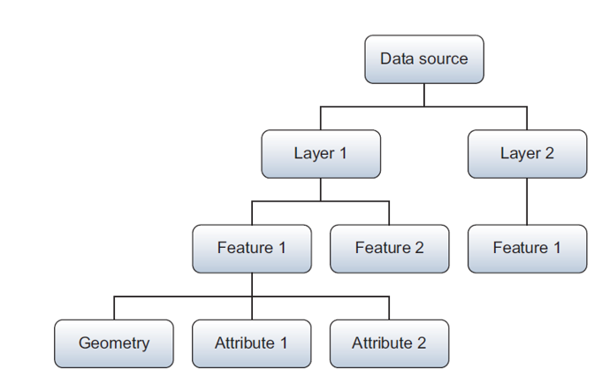
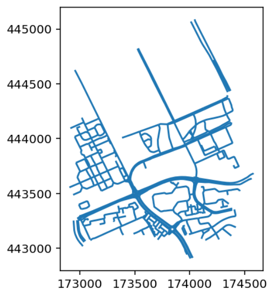
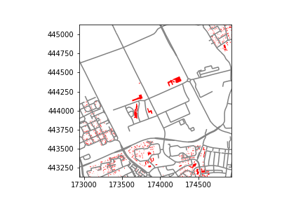
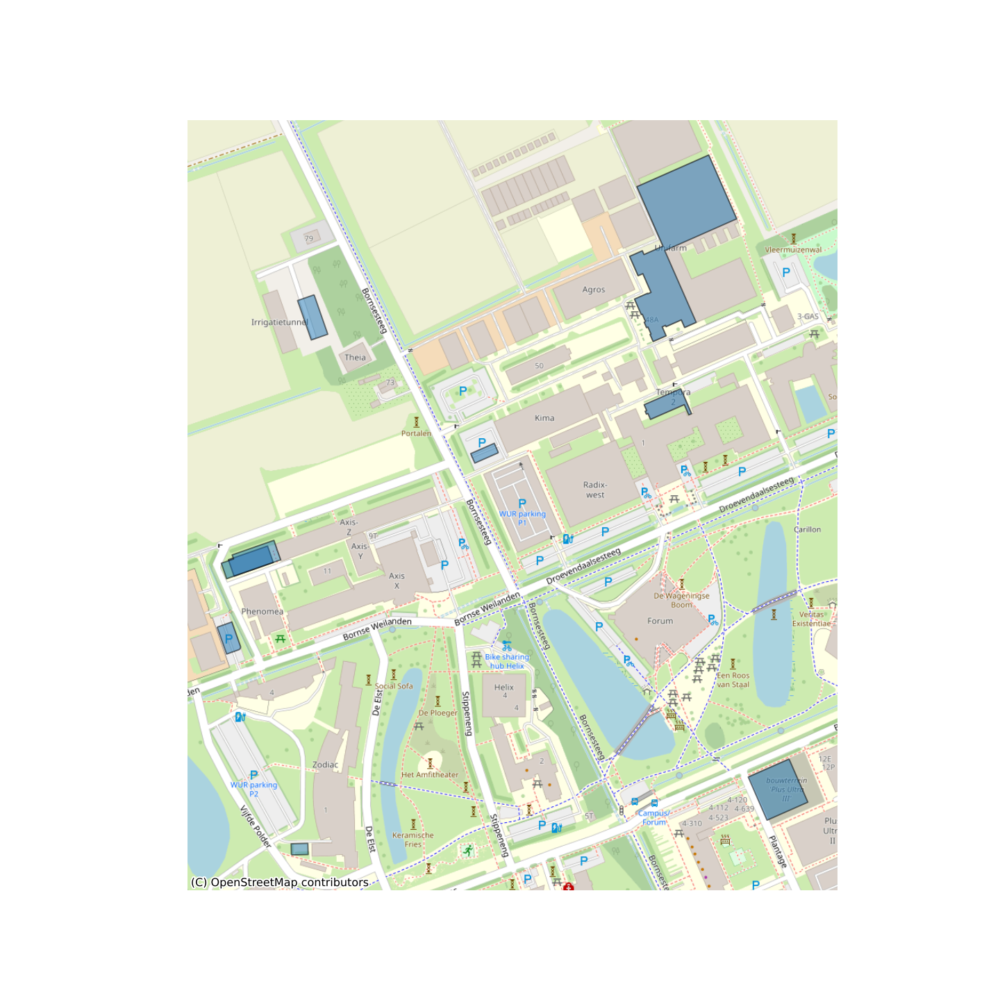
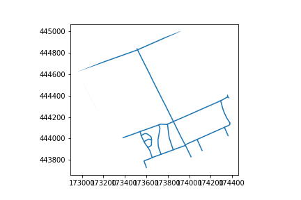
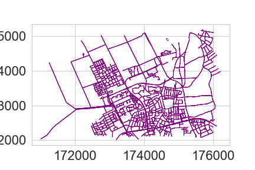
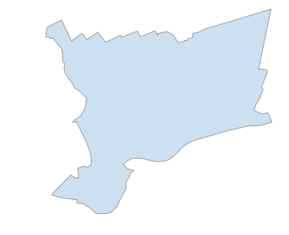

pixi init PythonVector #or give the directory a name to your likingVector data handling with Python
Introduction
Today we will explore a variety of Python packages for vector data handling:
- GDAL, the backbone of spatial data processing in Python (and R) with high performance
- Shapely for geometric operations
- GeoPandas for exploratory vector data analysis, based on Pandas for dataframes and data analysis
- pyproj for re-projecting
- Fiona for geodata access and conversions
- osmnx for network analysis
Learning objectives
- Know how to create a point dataset in Python
- Be able to write spatial vector formats to disk
- Be able to read spatial vector formats from web services and files
- Know how to apply basic operations on vector data, such as buffers and shortest-path algorithms
- Be able to plot spatial vector data with Matplotlib
Setting up the Python Environment
Open Positron and create a new directory for this tutorial using pixi:
The environment we are using today contains more (and larger) packages than yesterday, but the process we use to create and activate it is the same. Add the following packages into the environment:
pixi add python matplotlib gdal shapely geopandas>=1.0 owslib osmnx contextily foliumActivate the shell:
pixi shellThen create a script in the root directory and start coding.
Vector Geometries and Python
At the backbone of spatial data processing in Python is GDAL. GDAL means Geospatial Data Abstraction Library, it is a ‘translator library’ for raster and vector geospatial data. Although the overarching package is called GDAL, the term is mostly used for the raster handling part. The vector handling part of the GDAL package is called OGR.
In this tutorial, we will not work much with OGR separately. However, it is at the basis of many other packages. Therefore, to understand object structures in these packages, it is convenient to know how various objects in OGR are related to each other:
- When you open a file (e.g. shapefile), you have a DataSource object
- A Data source can have one or more Layer objects
- A Layer can have one or more Feature objects
- Features have Geometry and Attribute objects

WKT (Well Known Text) is a markup language that describes spatial information in a clean text format. WKT can represent the following distinct (OGC-defined) vector objects:
- Geometry primitives (single entity, basic types):
- Point
- Line (formally known as a LineString)
- Polygon
- Multipart geometries, homogeneous entity collections:
- Multi-Point
- Multi-Line (MultiLineString)
- Multi-Polygon
- GeometryCollection:
- A combination of any of the above
- Other, less used objects
Geometric objects in any Python package (e.g. GDAL, shapely) are usually based on the geometries that can be represented in WKT strings. As such, it is useful to know how to write geometries in WKT; then you do not need to learn the specific way of each individual Python package. GDAL (OGR) example:
from osgeo import ogr
# Define the WKT string
wktstring = "POINT (1120351.5712494177 741921.4223245403)"
# Transform to a GDAL (OGR) object
point = ogr.CreateGeometryFromWkt(wktstring)
# Get properties
print(type(point))
print("%d,%d" % (point.GetX(), point.GetY()))A Shapely example, where we create a point from WKT or make the Point object directly:
from shapely.geometry import Point
from shapely.wkt import loads
# Create point from WKT string
wktstring = 'POINT(173994.1578792833 444133.6032947102)'
wageningen_campus = loads(wktstring)
print(type(wageningen_campus))<class 'shapely.geometry.point.Point'># Point directly
wageningen_campus = Point([173994.1578792833, 444133.60329471016])
print(type(wageningen_campus))<class 'shapely.geometry.point.Point'>There is an equivalent in binary format called WKB, easier for computers to process and more efficient for data transfer.
Question 1: What does WKB mean? (hint: think about WKT)
Geopandas: GeoSeries and GeoDataFrames
GeoPandas strives to make vector processing in Python easier and has many functions available for exploratory vector data analysis. GeoPandas is based on Pandas. Pandas has two main data structures: the Series and the DataFrame. Correspondingly, GeoPandas has two main data structures: the GeoSeries and the GeoDataFrame.
A GeoSeries is a vector of features, where each feature contains: 1) an index, and 2) a geometry. The latter is a shapely.geometry object, and therefore inherits attributes and methods from shapely geometries, such as area, bounds, distance, etc. Finally, a GeoSeries can contain a coordinate reference system (crs). GeoPandas functions, such as buffering, can be applied to GeoSeries:
import geopandas as gpd
from shapely.wkt import loads
# Define a point
wktstring = 'POINT(173994.1578792833 444133.6032947102)'
# Convert to a GeoSeries
gs = gpd.GeoSeries([loads(wktstring)])
# Inspect the properties
print(type(gs), len(gs))<class 'geopandas.geoseries.GeoSeries'> 1# Specify the projection
gs.crs = "EPSG:28992"
# We can now apply a function
# As an example, we add a buffer of 100 m
gs_buffer = gs.buffer(100)
# Inspect the results
print(gs.geometry)0 POINT (173994.158 444133.603)
dtype: geometryprint(gs_buffer.geometry)0 POLYGON ((174094.158 444133.603, 174093.676 44...
dtype: geometryA GeoDataFrame is a tabular data structure with multiple columns, where one column is a GeoSeries. GeoDataFrames can be loaded from a file, created with data or loaded from a Pandas DataFrame. A Pandas DataFrame is, just like the structured NumPy array you learned about in the previous tutorial, a dataframe equivalent of R in Python. Note that a GeoSeries is thus an equivalent to a geometry column/vector in R.
A Pandas DataFrame plus a list of shapely geometries can be converted into a GeoSeries or directly to a GeoDataFrame.
import pandas as pd
# Create some data, with three points, a, b, and c.
data = {'name': ['a', 'b', 'c'],
'x': [173994.1578792833, 173974.1578792833, 173910.1578792833],
'y': [444135.6032947102, 444186.6032947102, 444111.6032947102]}
# Turn the data into a Pandas DataFrame (column names are extracted automatically)
df = pd.DataFrame(data)
# Inspect the DataFrame
print(df.head)<bound method NDFrame.head of name x y
0 a 173994.157879 444135.603295
1 b 173974.157879 444186.603295
2 c 173910.157879 444111.603295># Use the coordinates to make shapely Point geometries
geometry = [Point(xy) for xy in zip(df['x'], df['y'])]
# Pandas DataFrame and shapely Points can together become a GeoPandas GeoDataFrame
# Note that we specify the CRS (projection) directly while creating a GDF
wageningenGDF = gpd.GeoDataFrame(df, geometry=geometry, crs="EPSG:28992")
# Inspect wageningenGDF
print(type(wageningenGDF), len(wageningenGDF))<class 'geopandas.geodataframe.GeoDataFrame'> 3Question 2: What is the difference between a GeoSeries and a GeoDataFrame?
Geopandas provides a high-level interface to the Matplotlib library (see previous tutorial) for visualization. Vector data can simply be mapped by using the plot() method in a GeoSeries or GeoDataFrame. Several other arguments to customize the plot can still be used. Note that the aspect of the axes (see previous tutorial) is set to equal automatically when using Geopandas plot, i.e. the horizontal and vertical scale are automatically made the same.
import matplotlib.pyplot as plt
# Plotting a map of the GeoDataFrame directly
wageningenGDF.plot(marker='*', color='green', markersize=50){kind=link}
Re-projecting
An important step in the pre-processing of geodata is to get all datasets in a projection that suits the analysis to be performed. GeoPandas uses PyProj in the backend to reproject the geometry of the GeoDataFrame. Here is an example of how to reproject the wageningenGDF GeoDataFrame we created earlier from Dutch RD New (EPSG:28992) to WGS84 (EPSG:4326):
# Check the current crs
print(wageningenGDF.crs)EPSG:28992# Re-project the points to WGS84
wageningenGDF = wageningenGDF.to_crs('EPSG:4326')
# Check the crs again to see if the changes were succesful
print(wageningenGDF.crs)EPSG:4326Writing and Reading Files
GeoPandas uses pyogrio for file reading and writing files, while pyogrio, in its turn, builds on GDAL/OGR. Pygrio has drivers for most spatial datatypes, for example:
- Open formats such as GeoJSON and GPX
- ESRI formats such as shapefiles and OpenFileGDB
- Other formats such as MapInfo and DGN
In some cases, especially when connection external data sources such as webservices or databases Geopandas needs an external library to handle this connection, like OwsLib for webservices or Psycopg2 (or alternative) for databases. If none of these packages are helpful to access your files, OGR might still be able to help.
A GeoDataFrame can be written directly to a GeoJSON file or a shapefile. GeoJSON is a recommended format to use for geographic data in WGS84 coordinate system since JSON dictionaries are easy to read and use on the web, and GeoJSON is supported in popular GIS software. GeoJSON is a standard format to encode Geographic data structures in a dictionary. We assume that you are working in the main repository in which you have a data repository. Write some files to a GeoJSON and shapefile:
import os
if not os.path.exists('data'):
os.makedirs('data')
# Save to disk
wageningenGDF.to_file(filename='data/wageningenPOI.geojson', driver='GeoJSON')
wageningenGDF.to_file(filename='data/wageningenPOI.shp', driver='ESRI Shapefile')Reading files is just as intuitive:
# Read from disk
jsonGDF = gpd.read_file('data/wageningenPOI.geojson')
shpGDF = gpd.read_file('data/wageningenPOI.shp')Reading from webservices
The web has a lot of geodata available. The Open GeoSpatial Consortium (OGC) has specified standard protocols for geo-webservices, such as Web Feature Service (WFS) and Web Map Service (WMS). The standard web service protocols make it easy to access data. For example, the following WFS provided by Rijkswaterstaat on roads and is extracted from the Dutch national database of roads in the Netherlands:
from owslib.wfs import WebFeatureService
# Put the WFS url in a variable
wfsUrl = 'https://geo.rijkswaterstaat.nl/services/ogc/gdr/nwb_wegen/ows?service=WFS&request=getcapabilities&version=2.0.0 '
# Create a WFS object
wfs = WebFeatureService(url=wfsUrl, version='2.0.0')
# Get the title from the object
print(wfs.identification.title)nwb_wegen# Check the contents of the WFS
print(list(wfs.contents))['nwb_wegen:hectopunten', 'nwb_wegen:mutaties_hectopunten', 'nwb_wegen:mutaties_wegvakken', 'nwb_wegen:nwb_light', 'nwb_wegen:wegvakken']Question 3: How many feature sets does this WFS contain?
WFS give access to data in vector format and allow a quick view of the data making geodata accessible for everyone. If you want to do a large analysis, it is better to download geodata from other available repositories and not from a WFS, as it typically has limits on the number of features that can be requested, such as 100 or 1000 features. In the WFS above, they are very generous with a limit of max 15.000 features per request.
Load some roads from the WFS service for the campus area and plot them:
# Define center point and create bbox for study area
x, y = (173994.1578792833, 444133.60329471016)
xmin, xmax, ymin, ymax = x - 1000, x + 350, y - 1000, y + 350
# Get the features for the study area (using the wfs from the previous code block)
response = wfs.getfeature(typename=list(wfs.contents)[-1], bbox=(xmin, ymin, xmax, ymax))
# Save them to disk
with open('data/Roads.gml', 'wb') as file:
file.write(response.read())1262487# Read in again with GeoPandas
roadsGDF = gpd.read_file('data/Roads.gml')
# Inspect and plot to get a quick view
print(type(roadsGDF))<class 'geopandas.geodataframe.GeoDataFrame'>roadsGDF.plot()
plt.show(){kind=link}

Question 4: How many roads are there in the resulting GeoDataFrame (hint: len() or .info())? Do we miss roads in the extent?
Now let’s load some buildings from another WFS service (BAG) and plot them too.
import json
# Get the WFS of the BAG
wfsUrl = 'https://service.pdok.nl/lv/bag/wfs/v2_0'
wfs = WebFeatureService(url=wfsUrl, version='2.0.0')
layer = list(wfs.contents)[0]
# Define center point and create bbox for study area
x, y = (173994.1578792833, 444133.60329471016)
xmin, xmax, ymin, ymax = x - 500, x + 500, y - 500, y + 500
# Get the features for the study area
# notice that we now get them as json, in contrast to before
response = wfs.getfeature(typename=layer, bbox=(xmin, ymin, xmax, ymax), outputFormat='json')
data = json.loads(response.read())
# Create GeoDataFrame, without saving first
buildingsGDF = gpd.GeoDataFrame.from_features(data['features'])
# Set crs to RD New
buildingsGDF.crs = 28992
# Plot roads and buildings together
roadlayer = roadsGDF.plot(color='grey')
buildingsGDF.plot(ax=roadlayer, color='red')
# Set the limits of the x and y axis
roadlayer.set_xlim(xmin, xmax)(173494.1578792833, 174494.1578792833)roadlayer.set_ylim(ymin, ymax)(443633.60329471016, 444633.60329471016)
# Save the figure to disk
plt.savefig('./data/BuildingsAndRoads.png'){kind=link}

Question 5: How many buildings do you get? (hint: len()) Do you miss buildings? How can we extract missing buildings in our extent?
Selecting data
GeoDataFrames store rows and columns in a tabular format. To select specific rows, you can make use of the DataFrame functionality of Pandas. Inspect the content of your data:
# Pandas function that returns the column labels of the DataFrame
print(buildingsGDF.columns)Index(['geometry', 'identificatie', 'rdf_seealso', 'bouwjaar', 'status',
'gebruiksdoel', 'oppervlakte_min', 'oppervlakte_max',
'aantal_verblijfsobjecten'],
dtype='str')# Pandas function that returns the first n rows, default n = 5
print(buildingsGDF.head()) geometry ... aantal_verblijfsobjecten
0 POLYGON ((174109.846 443692.447, 174111.755 44... ... 1
1 POLYGON ((174160.754 444381.572, 174169.468 44... ... 1
2 POLYGON ((173839.227 444032.995, 173838.937 44... ... 1
3 POLYGON ((173723.809 444187.129, 173726.313 44... ... 1
4 POLYGON ((173914.428 443879.462, 173910.833 44... ... 1
[5 rows x 9 columns]# shape area (in the units of the projection)
print(buildingsGDF.area)0 2306.377288
1 8495.548236
2 1894.765417
3 4235.494168
4 838.594748
...
127 232.089589
128 1058.293098
129 727.254279
130 3947.569395
131 8157.757269
Length: 132, dtype: float64Columns can be selected using the name of the column. Let us take a look at the construction year (‘bouwjaar’) of the buildings.
# Inspect building year column
print(buildingsGDF['bouwjaar'])0 1998
1 1997
2 1960
3 1994
4 1966
...
127 2026
128 2026
129 2026
130 2026
131 1987
Name: bouwjaar, Length: 132, dtype: int64For selecting rows, GeoPandas inherits the pandas methods for selecting data: label-based indexing with loc, and integer-position- based indexing with iloc, which apply to both GeoSeries and GeoDataFrame objects. For more information on indexing/selecting, see the pandas documentation. In addition to these, GeoPandas provides coordinate based indexing with the cx indexer, which slices using a bounding box.
Let us select buildings (rows) with a larger surface area than 1000 m2 with the .loc method.
# Inspect first
print(buildingsGDF.area > 1000)0 True
1 True
2 True
3 True
4 False
...
127 False
128 True
129 False
130 True
131 True
Length: 132, dtype: bool
# Make the selection, select all rows with area > 1000 m2, and all columns
# Using 'label based' indexing with loc, here with a Boolean array
largeBuildingsGDF = buildingsGDF.loc[buildingsGDF.area > 1000, :]
# Plot
largeBuildingsGDF.plot(){kind=link}
When selecting rows based on a conditional rule we can ask pandas to check whether a value from a row is equal to a specific value. In the example below we select the rows where the buildings are not in use. We do this by checking where the state (‘status’ in Dutch) is not equal (!=) to in use (‘Pand in gebruik’). This returns a boolean array, which we can use to select rows. All rows where this array returns True are selected and the False rows are discarded.
# Inspect first
print( buildingsGDF['status'] != 'Pand in gebruik' )0 False
1 False
2 False
3 False
4 False
...
127 True
128 False
129 True
130 True
131 True
Name: status, Length: 132, dtype: bool
# Make the selection, the list of required values can contain more than one item
newBuildingsGDF = buildingsGDF[buildingsGDF['status'] != 'Pand in gebruik']
# Plot the new buildings with a basemap for reference
# based on https://geopandas.org/gallery/plotting_basemap_background.html
import contextily as ctx
# Re-project
newBuildingsGDF = newBuildingsGDF.to_crs(epsg=3857)
# Plot with 50% transparency
ax = newBuildingsGDF.plot(figsize=(10, 10), alpha=0.5, edgecolor='k')
#Load basemap
ctx.add_basemap(ax, zoom=17) #Basemap can be adjusted using the 'source' argument of add_basemap()
ax.set_axis_off(){kind=link}

(Figures shown here and in the next section may differ slightly from the ones you obtain.)
Geometric manipulations
GeoDataFrames and GeoSeries have several constructive methods to modify the geometry: buffer, boundary, centroid, convex hull, envelope, simplify, unary union, rotate, scale, skew and translate. When modifying the geometries in the DataFrames, it is a good practice to keep track of your geometry types and your geometry data. Have a look at the geometry types of the roads.
print(type(roadsGDF))<class 'geopandas.geodataframe.GeoDataFrame'>print(type(roadsGDF.geometry))<class 'geopandas.geoseries.GeoSeries'>print(roadsGDF['geometry'])0 LINESTRING (173852.725 444158.496, 173854.762 ...
1 LINESTRING (173523.907 444820.178, 173526.294 ...
2 LINESTRING (174354.572 444367.659, 174345.583 ...
3 LINESTRING (174291.46 444352.029, 174300.236 4...
4 LINESTRING (174008.895 445067.618, 174012.227 ...
...
514 LINESTRING (173808.336 443129.948, 173815.166 ...
515 LINESTRING (173825.932 443153.539, 173831.791 ...
516 LINESTRING (173016 444191, 173015.979 444185.9...
517 LINESTRING (172969.904 444096.527, 172977.77 4...
518 LINESTRING (172952.376 444625.65, 172959.232 4...
Name: geometry, Length: 519, dtype: geometryLet’s create a buffer around the roads to represent coverage of roads, assuming roads have all a width of 3 meters.
# Buffer of 1.5 m on both sides
roadsPolygonGDF = gpd.GeoDataFrame(roadsGDF, geometry=roadsGDF.buffer(distance=1.5))
# Plot
roadsPolygonGDF.plot(color='blue', edgecolor='blue')
# Check the total coverage of buffers
print(roadsPolygonGDF.area.sum())128306.30257770448{kind=link}
As we created buffers around many connected lines, we expect overlap of these buffer features. Therefore, let us merge all road buffer (polygon) features together and check again for the total coverage of buffers.
# Apply unary_all()
# This returns a geometry, which we convert to a GeoSeries to be able to apply GeoPandas methods again
roadsUnionGS = gpd.GeoSeries(roadsPolygonGDF.union_all())
# Check the new total coverage of buffers and compute the overlap
print(roadsUnionGS.area)0 123048.34582
dtype: float64print('There was an overlap of ' + round((roadsPolygonGDF.area.sum() - roadsUnionGS.area[0]), 1).astype(str) + ' square meters.')There was an overlap of 5258.0 square meters.Question 6: What is the geometry type in RoadsUnionGS?
Question 7: What coordinate system does RoadsUnionGS have?
GeoPandas can perform various overlay operations: intersection, union, symmetrical difference and difference. We will clip the roads with convexed parcels by using intersection. As an example, let us focus on the area around the new buildings on the campus and extract the existing roads close to them. To do so we buffer the new buildings with 100 meter, merge them with a unary_union and create a convex hull around the merged (multipolygon) buildings. Finally we clip the roads with this single polygon.
# Specify the coordinate system for roads
roadsPolygonGDF.crs = 28992
# Re-project new buildings dataset
newBuildingsGDF = newBuildingsGDF.to_crs(epsg=28992)
# Buffer, returns geometry, convert to GeoSeries
areaOfInterestGS = gpd.GeoSeries(newBuildingsGDF.buffer(distance=100).union_all())
# Convex hull, returns a GeoSeries of geometries, convert to GeoDataFrame
areaOfInterestGDF = gpd.GeoDataFrame(areaOfInterestGS.convex_hull)
# Adapt metadata
areaOfInterestGDF = areaOfInterestGDF.rename(columns={0:'geometry'}).set_geometry('geometry')
areaOfInterestGDF.crs = 'EPSG:28992'
# Perform an intersection overlay
roadsIntersectionGDF = gpd.overlay(areaOfInterestGDF, roadsPolygonGDF, how="intersection")
# Plot the results
roadlayer = roadsIntersectionGDF.plot(color='grey', edgecolor='grey')
newBuildingsGDF.plot(ax=roadlayer, color='red'){kind=link}

In summary, the advantage of GeoPandas is that it allows both geometric and dataframe manipulations/selections. As a result, GeoPandas can for example select the roads within a set bounding box and within (and maintained by) Wageningen Municipality.
# Put the WFS url in a variable again
wfsUrl = 'https://geo.rijkswaterstaat.nl/services/ogc/gdr/nwb_wegen/ows?service=WFS&request=getcapabilities&version=2.0.0'
# Create a WFS object
wfs = WebFeatureService(url=wfsUrl, version='2.0.0')
# Let's create a bit bigger bounding box for this example than last time
x, y = (173994.1578792833, 444133.60329471016)
xmin, xmax, ymin, ymax = x - 3000, x + 3000, y - 3000, y + 3000
# Get the features for the study area
response = wfs.getfeature(typename=list(wfs.contents)[-1], bbox=(xmin, ymin, xmax, ymax))
roadsGDF = gpd.read_file(response)
# Select the roads within Wageningen municipality
wageningenRoadsGDF = roadsGDF.loc[roadsGDF['gme_naam'] == 'Wageningen']
# Plot
wageningenRoadsGDF.plot(edgecolor='purple'){kind=link}

Network analysis
OSMnx retrieves, constructs, analyzes and visualizes street networks from OpenStreetMap. In short, a network analysis is investigating structures of relations between entities with the use of networks and graph theory. In spatial data, such entities are typically animals or people, and the relations between them, for example social networks. But relations can also be between multiple points in time for the same person, e.g. movement processes like walking, cycling, and driving.
The following script downloads the street network of Wageningen from Open Street Map as a graph, plots it, and saves it.
import osmnx as ox
# Using a geocoder to get the extent
city = ox.geocoder.geocode_to_gdf('Wageningen, Netherlands')
city.plot(color = 'lightblue', edgecolor = 'grey', linewidth = 0.5, alpha = 0.8)
# Get bike network and create graph
wageningenRoadsGraph = ox.graph.graph_from_place('Wageningen, Netherlands', network_type='bike')
# Plot and save
ox.plot.plot_graph(wageningenRoadsGraph, figsize=(10, 10), node_size=2){kind=link}
gdf_nodes, gdf_edges = ox.graph_to_gdfs(G=wageningenRoadsGraph)
gdf_edges.to_file('./data/OSMnetwork_Wageningen.shp', driver='ESRI Shapefile')
# Metadata
print(gdf_nodes.info())<class 'geopandas.geodataframe.GeoDataFrame'>
Index: 3699 entries, 44571129 to 14136700995
Data columns (total 5 columns):
# Column Non-Null Count Dtype
--- ------ -------------- -----
0 y 3699 non-null float64
1 x 3699 non-null float64
2 street_count 3699 non-null int64
3 highway 109 non-null str
4 geometry 3699 non-null geometry
dtypes: float64(2), geometry(1), int64(1), str(1)
memory usage: 173.4 KB
Noneprint(gdf_edges.info())<class 'geopandas.geodataframe.GeoDataFrame'>
MultiIndex: 9426 entries, (np.int64(44571129), np.int64(8097804061), np.int64(0)) to (np.int64(14136700995), np.int64(5033272204), np.int64(0))
Data columns (total 17 columns):
# Column Non-Null Count Dtype
--- ------ -------------- -----
0 osmid 9426 non-null object
1 highway 9426 non-null object
2 maxspeed 4976 non-null object
3 name 5817 non-null object
4 oneway 9426 non-null bool
5 reversed 9426 non-null object
6 length 9426 non-null float64
7 geometry 9426 non-null geometry
8 width 200 non-null str
9 access 343 non-null str
10 lanes 978 non-null object
11 service 1339 non-null object
12 bridge 102 non-null str
13 ref 185 non-null str
14 junction 70 non-null str
15 tunnel 24 non-null str
16 est_width 2 non-null str
dtypes: bool(1), float64(1), geometry(1), object(7), str(7)
memory usage: 1.3+ MB
None{kind=link}

OSMnx can store the downloaded street network (the Graph) as a shapefile or as a GeoDataFrame. Furthermore, the main purpose of the module is to perform network analyses, such as a shortest path from source to target location. Let us calculate the shortest path from Wageningen campus to Wageningen city center. Is this the route you would take?
# Origin
source = ox.distance.nearest_nodes(wageningenRoadsGraph, 5.665779, 51.987817)
# Destination
target = ox.distance.nearest_nodes(wageningenRoadsGraph, 5.662409, 51.964870)
# Compute shortest path
shortestroute = ox.routing.shortest_path(G=wageningenRoadsGraph, orig=source,
dest=target, weight='length')
# Plot
fig, ax = ox.plot.plot_graph_route(wageningenRoadsGraph, shortestroute, figsize=(20, 20),
route_alpha=0.6, route_color='darkred', bgcolor='white',
node_color='darkgrey', edge_color='darkgrey',
route_linewidth=10, orig_dest_size=100){kind=link}
Interactive visualization
There are multiple options to visualize your geodata: GIS software (QGIS), web maps (leaflet/Folium) and images (Matplotlib). We have already explored some of them previously during the tutorials, but here we will take a closer look at creating interactive web maps using Folium.
Folium uses leaflet on the backend to make web maps, easily visualized on a webpage. Leaflet is an open-source JavaScript library for mobile-friendly interactive maps. Folium handles GeoDataFrames or JSON files as input for the interactive map. The Python script below makes a .html file in your working directory, which you can open in a web browser:
import folium
# Initialize the map with satellite basemap
campusMap = folium.Map([51.98527485, 5.66370505205543], tiles = "https://server.arcgisonline.com/ArcGIS/rest/services/""World_Imagery/MapServer/tile/{z}/{y}/{x}", attr = "Tiles © ESRI", zoom_start=17)
# Re-project
buildingsGDF = buildingsGDF.to_crs(4326)
# Remove Timestamp objects
roadsPolygonGDF = roadsPolygonGDF.drop(columns=['wvk_begdat'])
# Folium does not support Timestamp objects, thus this column has to be dropped
roadsPolygonGDF = roadsPolygonGDF.to_crs(4326)
# Add the buildings
folium.Choropleth(buildingsGDF, name='Building construction years',
data=buildingsGDF, columns=['identificatie', 'bouwjaar'],
key_on='feature.properties.identificatie', fill_color='RdYlGn',
fill_opacity=0.7, line_opacity=0.2,
legend_name='Construction year').add_to(campusMap)<folium.features.Choropleth object at 0x0000012CDDD0DF10># Add the roads
folium.GeoJson(roadsPolygonGDF).add_to(campusMap)<folium.features.GeoJson object at 0x0000012CDE580440># roadsPolygonGDF.explore()
# Add layer control
folium.LayerControl().add_to(campusMap)<folium.map.LayerControl object at 0x0000012CDE5F1D00>
# Save (you can now open the generated .html file from the output directory)
campusMap.save('./data/campusMap.html')